Indennità di trasferta e ricollocazione per inidoneità: la posizione della Cassazione
La Corte di Cassazione ha affrontato il caso di un macchinista divenuto inidoneo e ricollocato in un Comune diverso da quello di assunzione. Secondo la Corte, se lo spostamento ris…

Infortunio in smart working: quando scatta la tutela INAIL
Il Tribunale di Padova ha stabilito che la caduta domestica di una dipendente in lavoro agile è un infortunio sul lavoro, con condanna dell'INAIL al rimborso delle spese mediche. L…

Dimissioni per fatti concludenti: quanti giorni di assenza servono
L'assenza ingiustificata prolungata può valere come dimissioni, senza bisogno della procedura telematica. La legge fissa una soglia precisa, derogabile dal CCNL. Capire quando scat…

TFR dei neoassunti e adesione automatica alla previdenza complementare: cosa cambia per i datori di lavoro
Si torna a parlare di adesione automatica alla previdenza complementare per i neoassunti e di aggiornamento della modulistica e del flusso Uniemens. Alcuni dettagli operativi circo…

Cessione di quote e imposta di registro: la Cassazione conferma la tassa fissa
Con due sentenze gemelle (19706 e 19709 del 2026), la Cassazione ribadisce che la cessione dell'intero capitale di una società non equivale alla vendita dell'azienda e sconta l'imp…

Intelligenza artificiale e stress dei dipendenti: cosa vieta la legge
Software che analizzano chat ed email per misurare stress ed emozioni dei dipendenti promettono benessere organizzativo. Ma il quadro europeo li colloca tra le pratiche vietate. L'…

Processo in assenza: la conoscenza del difensore non vale per l'imputato
La conoscenza che il difensore ha del procedimento non si trasferisce in automatico all'imputato giudicato in assenza. Per negare i rimedi previsti dal codice, il giudice deve prov…

Ispezioni fiscali e tutela del domicilio: cosa cambia dopo la CEDU
Una recente pronuncia della Corte europea dei diritti dell'uomo riaccende il dibattito sui limiti delle ispezioni fiscali. Sotto esame la tutela del domicilio dell'articolo 8 CEDU:…

Scomputo INAIL dal risarcimento: serve l'identità del danno
Con l'ordinanza n. 14356/2026 la Cassazione chiarisce un punto decisivo per i lavoratori danneggiati: la rendita INAIL non può essere automaticamente detratta dal risarcimento dovu…

Affido ai figli che scelgono il genitore ostile: il nodo tra ascolto del minore e reato di inadempimento
La giurisprudenza di legittimità torna sul rapporto tra collocazione dei figli e condotta ostativa del genitore. Quando i ragazzi, ascoltati dal giudice, esprimono una preferenza n…

Pergotenda in condominio: le distanze civilistiche dal codice civile
Una pergotenda installata in modo stabile può essere legittima sul piano urbanistico ma illegittima su quello civilistico. Una recente pronuncia del Tribunale di Trani ha ribadito …

Ricorsi prolissi e oscuri: l'inammissibilità secondo la Cassazione
Un ricorso lungo non è un ricorso chiaro. La Terza Sezione civile della Cassazione ha dichiarato inammissibile un'impugnazione prolissa ma priva della chiara esposizione dei fatti …

Crediti ereditari: un coerede può riscuoterli da solo?
Quando il defunto lascia crediti da riscuotere, un solo erede può agire senza interpellare gli altri? La risposta non è scontata. Debiti e crediti seguono regole opposte: i primi s…

Nuova famiglia e assegno divorzile: basta per non pagare più?
No. Chi forma una nuova famiglia non smette automaticamente di versare l'assegno divorzile. La Cassazione ha ribadito che la revisione richiede la prova di una concreta e stabile m…
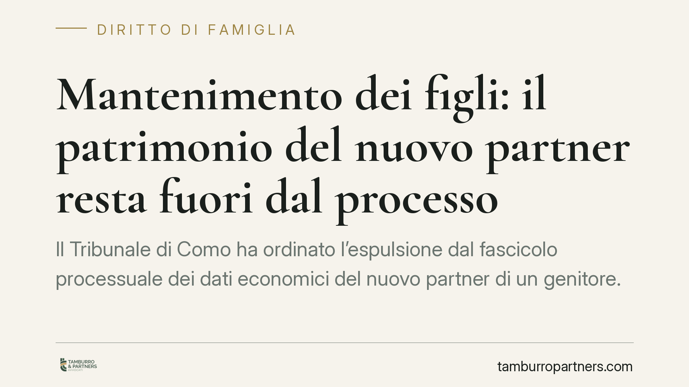
Mantenimento dei figli: il patrimonio del nuovo partner resta fuori dal processo
Il Tribunale di Como ha ordinato l'espulsione dal fascicolo processuale dei dati economici del nuovo partner di un genitore. Nelle cause sul mantenimento dei figli, il patrimonio d…
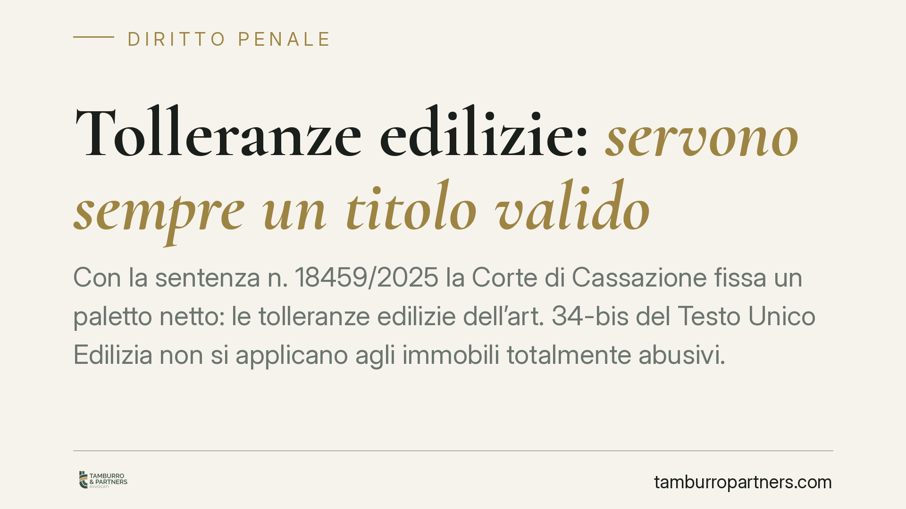
Tolleranze edilizie: servono sempre un titolo valido
Con la sentenza n. 18459/2025 la Corte di Cassazione fissa un paletto netto: le tolleranze edilizie dell'art. 34-bis del Testo Unico Edilizia non si applicano agli immobili totalme…
Busta paga digitale: sul datore l'onere di provare la consegna
La documentazione del rapporto di lavoro può essere consegnata in formato digitale tramite piattaforma. Ma il datore conserva l'onere di dimostrare che il lavoratore l'ha ricevuta …
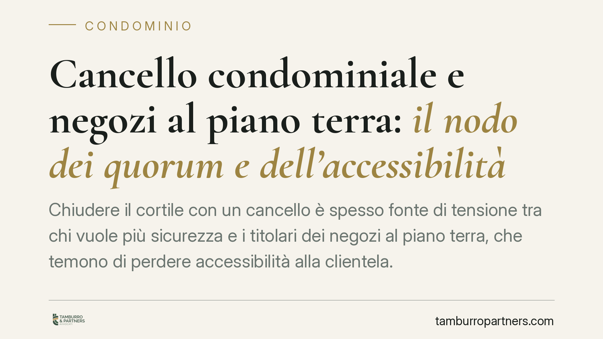
Cancello condominiale e negozi al piano terra: il nodo dei quorum e dell'accessibilità
Chiudere il cortile con un cancello è spesso fonte di tensione tra chi vuole più sicurezza e i titolari dei negozi al piano terra, che temono di perdere accessibilità alla clientel…
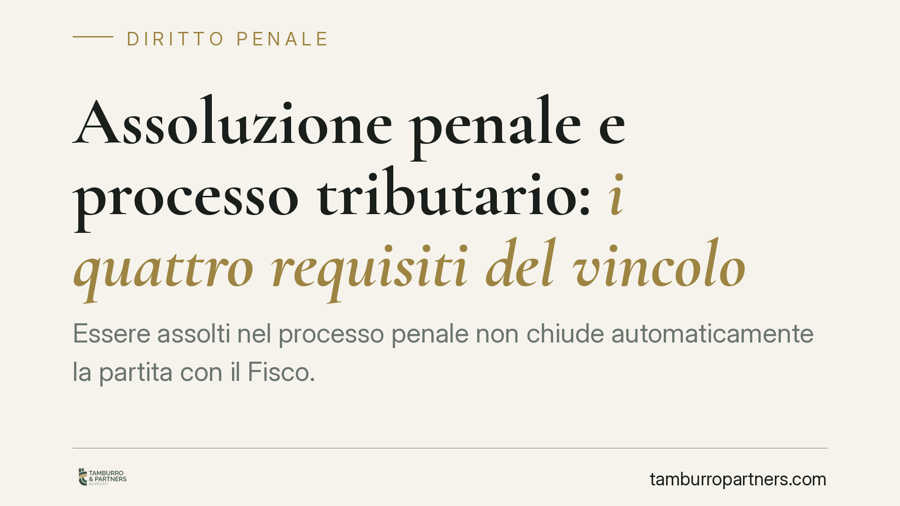
Assoluzione penale e processo tributario: i quattro requisiti del vincolo
Essere assolti nel processo penale non chiude automaticamente la partita con il Fisco. La Corte di giustizia tributaria di secondo grado del Lazio (sentenza 4590/2026) precisa che …
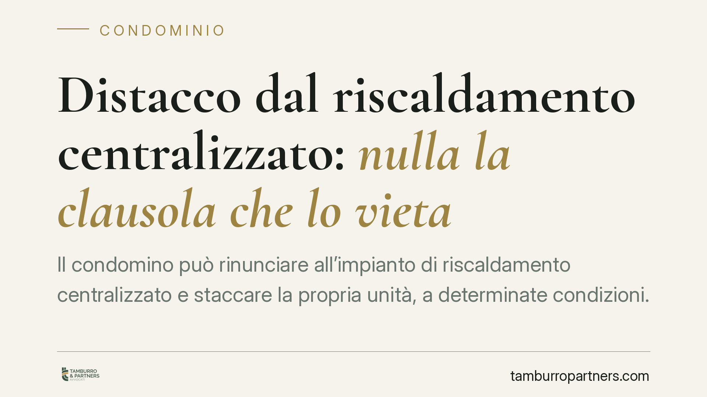
Distacco dal riscaldamento centralizzato: nulla la clausola che lo vieta
Il condomino può rinunciare all'impianto di riscaldamento centralizzato e staccare la propria unità, a determinate condizioni. La giurisprudenza considera nulla ogni clausola regol…
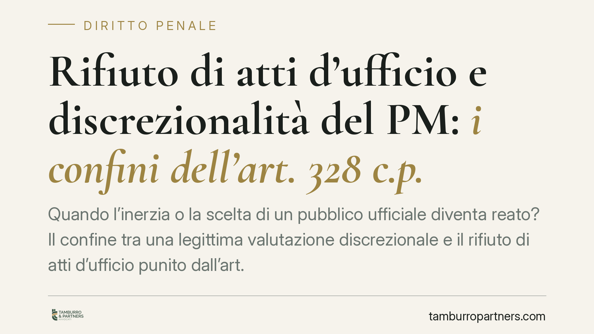
Rifiuto di atti d'ufficio e discrezionalità del PM: i confini dell'art. 328 c.p.
Quando l'inerzia o la scelta di un pubblico ufficiale diventa reato? Il confine tra una legittima valutazione discrezionale e il rifiuto di atti d'ufficio punito dall'art. 328 del …
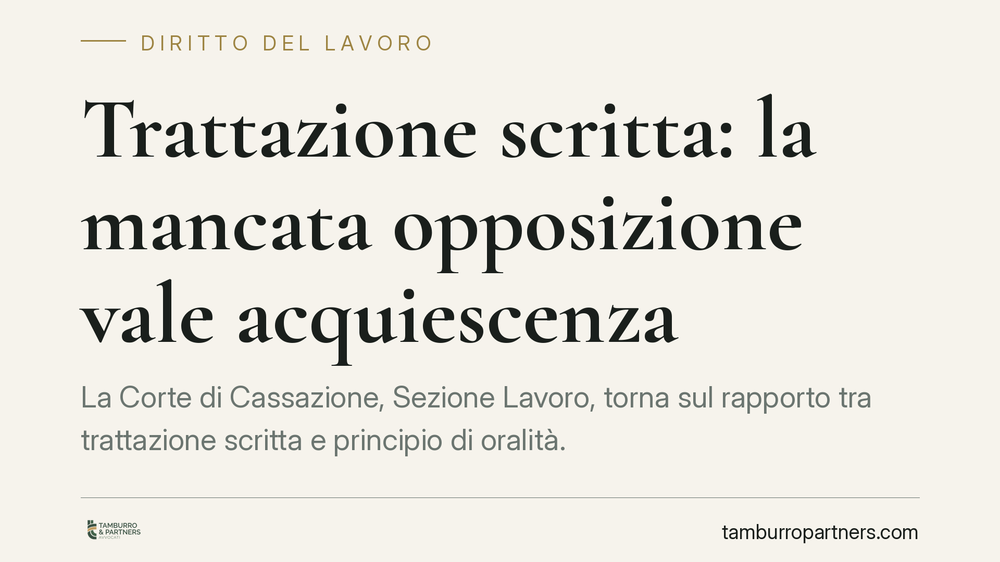
Trattazione scritta: la mancata opposizione vale acquiescenza
La Corte di Cassazione, Sezione Lavoro, torna sul rapporto tra trattazione scritta e principio di oralità. Il punto fermo: chi riceve il decreto di trattazione cartolare e non si o…
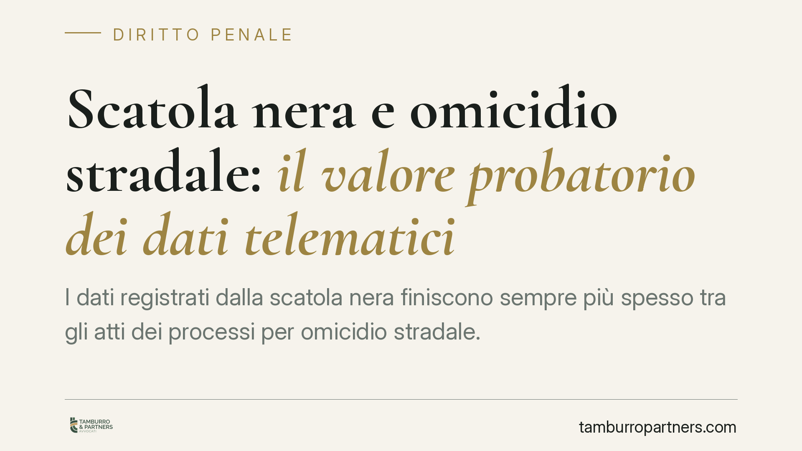
Scatola nera e omicidio stradale: il valore probatorio dei dati telematici
I dati registrati dalla scatola nera finiscono sempre più spesso tra gli atti dei processi per omicidio stradale. La giurisprudenza di legittimità tende a riconoscerne la piena uti…
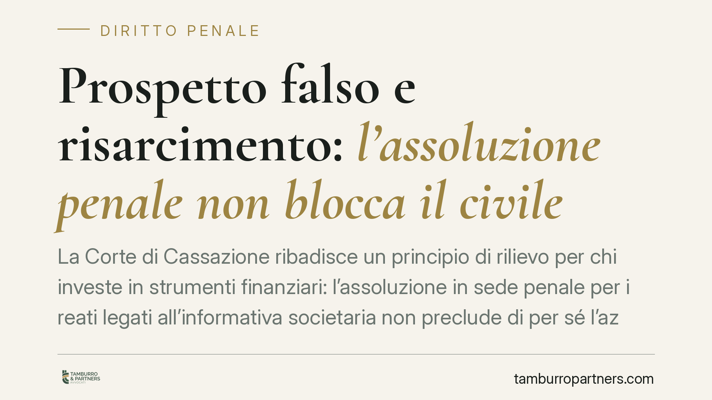
Prospetto falso e risarcimento: l'assoluzione penale non blocca il civile
La Corte di Cassazione ribadisce un principio di rilievo per chi investe in strumenti finanziari: l'assoluzione in sede penale per i reati legati all'informativa societaria non pre…
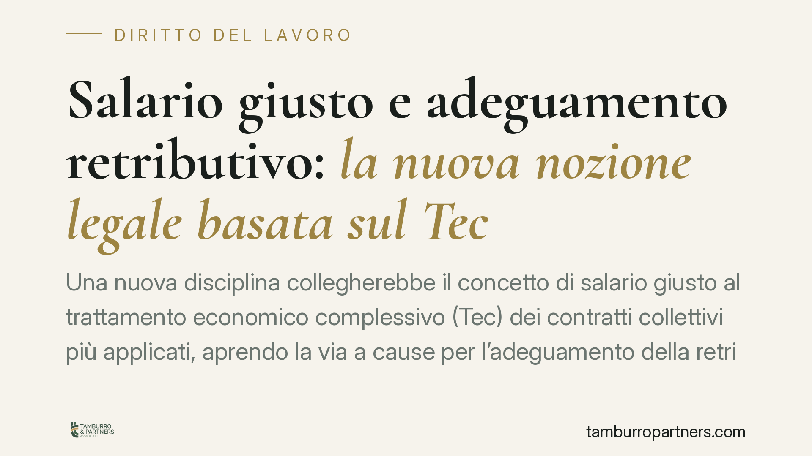
Salario giusto e adeguamento retributivo: la nuova nozione legale basata sul Tec
Una nuova disciplina collegherebbe il concetto di salario giusto al trattamento economico complessivo (Tec) dei contratti collettivi più applicati, aprendo la via a cause per l'ade…
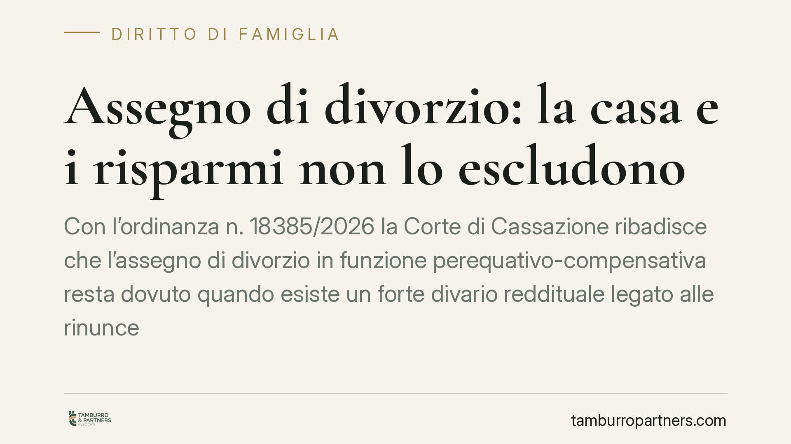
Assegno di divorzio: la casa e i risparmi non lo escludono
Con l'ordinanza n. 18385/2026 la Corte di Cassazione ribadisce che l'assegno di divorzio in funzione perequativo-compensativa resta dovuto quando esiste un forte divario reddituale…
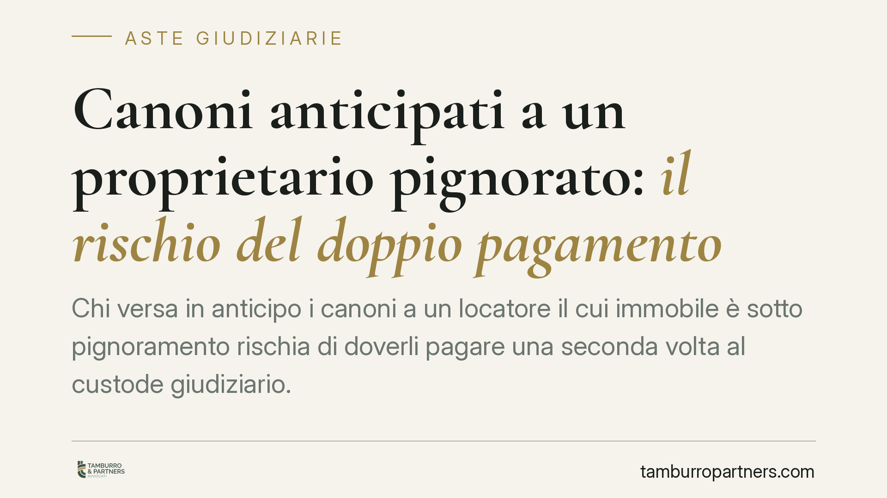
Canoni anticipati a un proprietario pignorato: il rischio del doppio pagamento
Chi versa in anticipo i canoni a un locatore il cui immobile è sotto pignoramento rischia di doverli pagare una seconda volta al custode giudiziario. La Cassazione torna sul punto:…
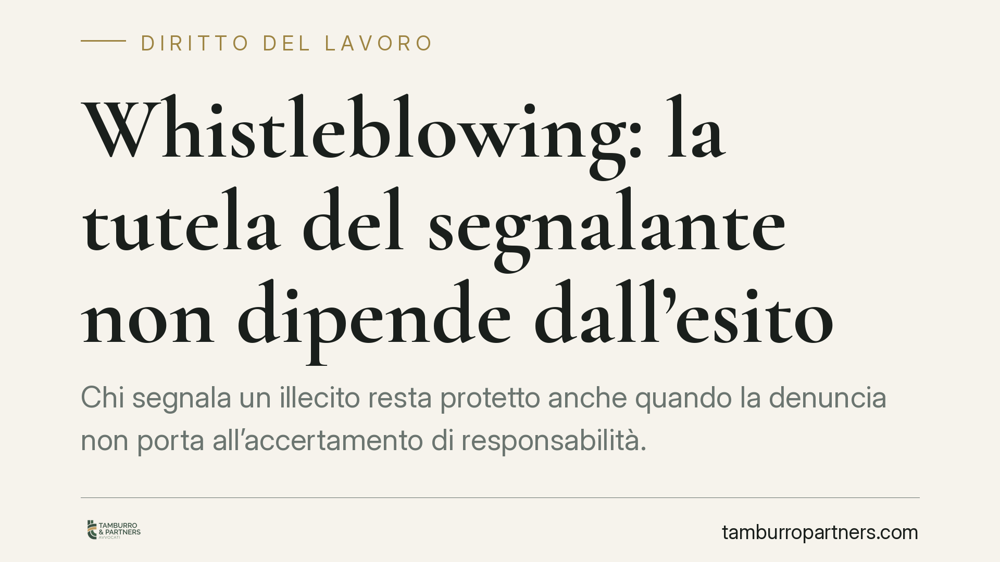
Whistleblowing: la tutela del segnalante non dipende dall'esito
Chi segnala un illecito resta protetto anche quando la denuncia non porta all'accertamento di responsabilità. A contare non è l'esito, ma la buona fede e la ragionevolezza della se…
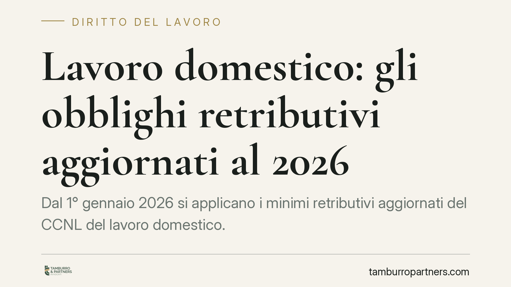
Lavoro domestico: gli obblighi retributivi aggiornati al 2026
Dal 1° gennaio 2026 si applicano i minimi retributivi aggiornati del CCNL del lavoro domestico. Per chi assume colf, badanti o babysitter non si tratta di un dettaglio contabile: s…
Stalking e Codice Rosso: la pena più severa e il momento del reato
Nello stalking, reato che si costruisce nel tempo attraverso condotte reiterate, individuare il momento della consumazione è decisivo per stabilire quale pena applicare. La Cassazi…